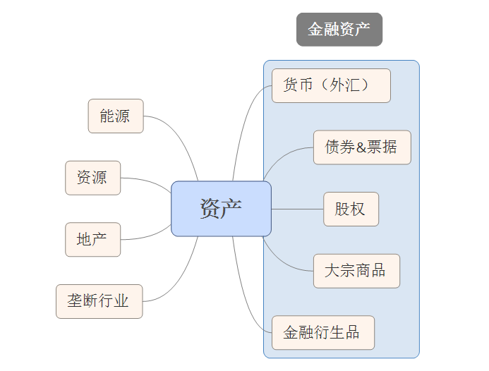
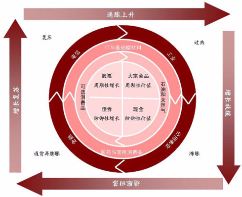
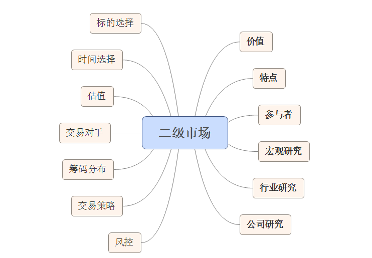
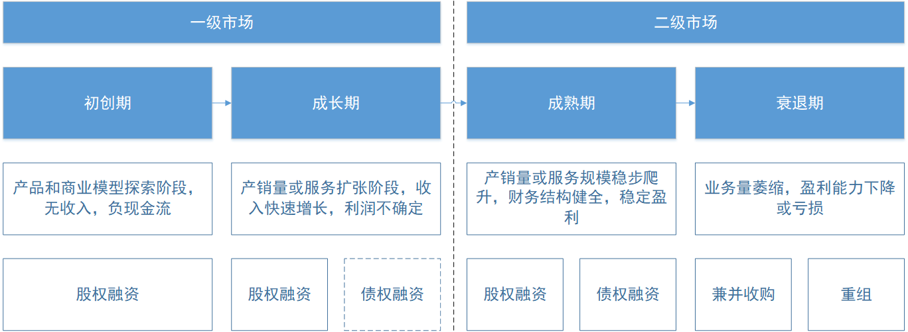
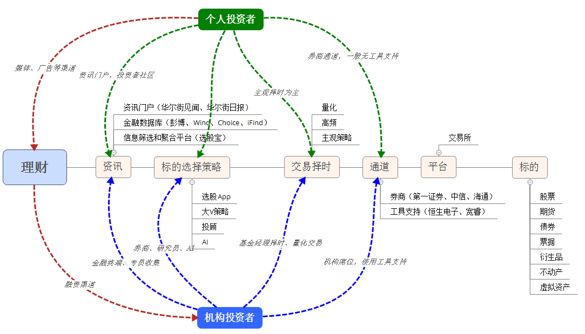
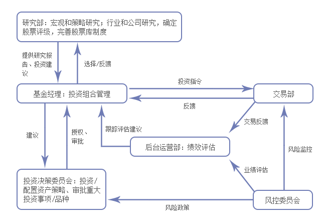

简单说说二级市场和相关的基本面分析框架。
尝试解释的问题
- 二级市场是怎样一个市场？
- 二级市场和一级市场（创投、私募股权）有什么关联和区别？
- 我们能从二级市场中获取到哪些有助于一级市场投资的信息？
二级市场概念
资产类别
全球几乎所有价值转换都在以下资产中进行。这些资产都具有一定的流动性，并有相对科学的估值方式给予公允价值。
货币是其中最为特殊的资产类别，在很大程度上影响其他资产的价格，同时又受到更多因素影响或控制。
Ps：以下资产均为具备保值属性的资产类别。而非标的艺术品、古玩等未纳入，高单价耐用品（豪车、飞机、游艇）等未纳入。

影响资产价格的因素
- 供需 供需从本质上影响资产的内在价值
- 政权 政治的动荡直接影响到资产产权的稳定性和合法性
- 货币乘数 货币量从计价单位上影响资产的表面价格
- 经济 经济趋势会影响投资者信心，同时对资产价格的影响通过供需和货币乘数起作用，但内在机理更为复杂

二级市场概念（股权）
二级市场是有价证券发行和交易的场所。
整个二级市场涵盖了大量内容，一部分和价值相关，一部分和交易相关。

二级市场的意义
- 价值发现 帮助上市主体（公司）进行估值和股权合理定价
- 供需匹配 撮合更广泛的投资者和公司，为主业发展输血
- 提供流动性 为股权持有者提供交易和变现的通道
二级市场的特点
- 股权主体较为成熟 一般在二级市场交易的公司，主业相对成熟稳定
- 更大的体量和更广泛的参与者 二级市场的体量一般和国家GDP相当，并且涵盖众多不同类型的参与者（公司、信托、产业资本、基金、保险、个人投资者等）
- 高流动性和波动性 收益以体量和参与者，二级市场流动性很高，但同时受到各方面的信息影响，波动较大
全球体量较大的二级市场
- 美股市场
- A股市场
- 港股市场
一级市场和二级市场的联系
二级市场是私募股权退出的渠道之一

一、二级市场区别
- 投资者组成不同
- 风险/收益构成不同
- 回报周期不同
- 流动性不同
一级市场
- 围绕公司股权流转
- 非公开，股权在少数股东或实体之间流转
- 低流动性，股权流转多发生在公司原始股东与机构之间
二级市场
- 围绕公司股权和债权流转
- 公开，股权或债权在大量股东实体之间流转
- 高流动性，股权或债权流转多发生在公众投资者之间
二级市场的研究（基本面）
由于二级市场具有相对充分的信息披露机制和一定体量的研究群体，因此针对二级市场的研究有助于我们把握整体的经济数据、行业情况和标杆公司，能够更定量的为投资决策作出支持。同时，对于不适于创业投资的赛道，也可以从二级市场中选择标的，以观察验证自己对行业和市场的发展趋势判断。
宏观经济数据
通过Wind等数据终端可以比较方便的获取较为宏观的经济和行业数据。但宏观数据研究对于细分赛道的意义不大，最多只能充当大行业发展方向的数据支持。
- 中国移动互联网用户人数增长率对手游行业的影响
- 中国基站投资对5G行业下游发展的影响
行业研究
二级市场行业研究较为充分，但主要涵盖具备一定体量的公司。从行业研究中我们一般获取以下信息：
- 行业的基本情况和概念
- 行业的历史变革
- 上下游情况和产业链低位
- 行业大致的市场竞争格局
- 行业内具备一定体量的公司及其简单的业务数据
一般通过二级市场的深度研究报告是我们初步了解一个行业情况的最快途径，在了解上述情况后我们可以根据其中信息由点及面展开更深入的研究，但是二级市场的行业研究数量众多，因此同样需要注意以下几点：
- 注重行业的历史和发展轨迹
- 注重行业内主要公司及其相关经营数据和发展趋势
- 区分客观数据和主观判断，一般客观数据容易验证，但研究员的主观判断不一定靠谱
- 多阅读不同的研报或同第三方进行交叉验证
公司基本面研究
公司基本面研究内容很多，这里提一些要点
- 抓住行业龙头公司
- 新公司的研究从招股书开始（五年内），老公司的研究从历史和年报开始
经营状况
- 了解公司的背景和发展历史
- 了解公司的主营业务发展和变更情况
- 了解公司的主营业务核心数据
- 了解公司的创始人和团队背景
- 趋势重于基数
财务状况
- 上市公司业务比较综合，横向比较数据必须分项
- 了解公司的绝对营收和利润体量
- 了解公司的现金流水平
- 了解公司的关键运营比率（负债率、净资产收益率、周转率、账期等）
- 了解公司的利润率水平（毛利率、净利率等）
行业竞争
- 通过招股书了解行业的详细情况
- 通过产销量或覆盖率了解行业竞争格局和低位
估值情况
- 了解公司在不同市场环境（牛市&熊市）下的估值水平
- 通过合理的估值方法对公司进行估值（PE、PB、PS、EPS等等）
二级市场的资金流转

二级市场的参与者（交易对手）
- 公司 公司是股权主要的持有人，一般通过在二级市场增发股份的形式筹集资金扩展业务
- 机构资金 包括保险资金、银行资金、养老金等各种实体机构资金池
- 资管机构 包括公募基金、私募基金、对冲基金、券商资管等多种形式
- 产业资本 一般由产业中的公司出资或构成联盟
- 个人投资者 期望从二级市场中获得超额收益的投资者
二级市场的运作模式（买方）
二级私募基金的工作涵盖内容
二级私募基金的组织构架
二级市场私募从构架上和一级私募股权基金较为类似，但在具体职能执行上有所区别，并有若干新增的职能部门。除了投资总监-基金经理-研究员一线外，还有交易部门和风控部门两个职能部门。
二级私募基金的投研流程
就投研业务而言，各层负责主要
- 研究员 进行行业和公司基本面研究，筛选标的至股票池，向基金经理推荐标的
- 基金经理 判断标的质量和择时，投资组合管理和仓位管理
- 投委会 重大基金仓位配置或变动决策，投资策略变更决策
- 交易部门 执行交易计划，降低交易成本，进行基金清算
- 风控部门 基金仓位和交易策略等风险控制，仓位限制等

关于交易
- 标的选择
- 交易对手
- 筹码分布
- 估值水平
- 市场情绪
- 催化剂和短期刺激
- 仓位管理